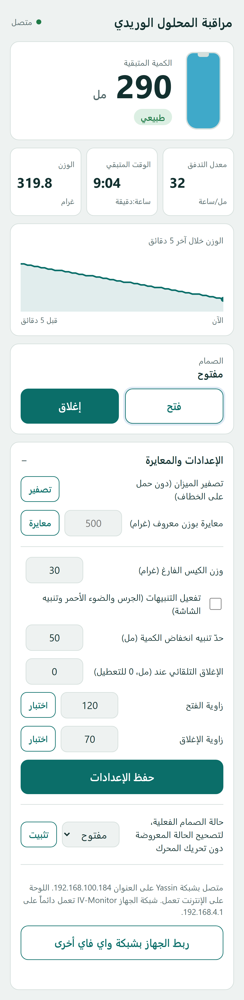
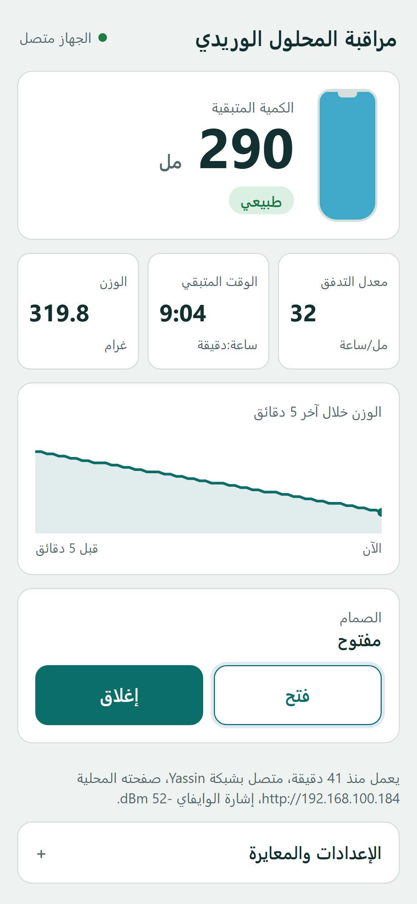

كيف تشغّل الجهاز، وتربطه بالواي فاي، وتفتح لوحة التحكم، وماذا تفعل بها.
الجهاز يزن قنينة المحلول طوال الوقت، ويحسب منها الكمية المتبقية وسرعة نزول المحلول والوقت الباقي حتى تفرغ. يعرض ذلك على شاشته الصغيرة، وعلى لوحة تحكم تفتحها من الموبايل أو اللابتوب. ومن اللوحة تفتح الأنبوب أو تغلقه بمحرك صغير يعصره.
ما تحتاجه
الجهاز على اللوح الخشبي، والقنينة معلّقة بخلية الحمل.
كيبلا USB الخارجان من أسفل الجهاز.
باور بانك، أو شاحن USB فيه منفذان.
موبايل أو لابتوب فيه متصفح.
محتويات الدليل
التشغيل
ربط الجهاز بالواي فاي
فتح لوحة التحكم، بثلاث طرق
ماذا تفعل باللوحة
شاشة الجهاز
مشاكل وحلولها
الجهاز كما بُني، وأسماء أجزائه
دليل استخدام جهاز مراقبة المحلول الوريدي1
1التشغيل
الكيبلان يدخلان معاً في الباور بانك أو الشاحن
اشبك الكيبل الأول في الباور بانك أو الشاحن. هذا الكيبل يدخل في المتحكم (اللوحة السوداء الصغيرة)، ويشغّل الجهاز كله.
اشبك الكيبل الثاني، وهو الكيبل المقصوص، في المنفذ الآخر. هذا يشغّل محرك الصمام فقط.
بعد ثوانٍ تضيء الشاشة وتكتب IV Monitor ثم Starting، ثم يبدأ الاتصال بالواي فاي.
الكيبلان ضروريان معاًبدون الكيبل الثاني يعمل الوزن والشاشة واللوحة، لكن الصمام لا يتحرك.
لا تعتمد على منفذ اللابتوبتشغيل الواي فاي يحتاج تياراً لا تعطيه بعض منافذ اللابتوب، فيطفئ الجهاز ويعيد التشغيل مرة بعد مرة. استعمل باور بانك أو شاحناً، وكيبلاً قصيراً جيداً.
دليل استخدام جهاز مراقبة المحلول الوريدي2
2ربط الجهاز بالواي فاي
تفعل هذا أول مرة فقط، أو عندما تنقل الجهاز إلى مكان فيه شبكة أخرى. في المكان نفسه يتذكر الجهاز الشبكة ويتصل وحده كل مرة.
الشاشة تطلب الإعداد
الواي فاي
IV-Monitor
كلمة المرور12345678
Yassin
Home-5G
ادخل شبكة IV-Monitor
IV Monitor
WiFiManager
Configure WiFi
Info
Exit
اضغط Configure WiFi
Yassin ●●●
Neighbour ●●
Office-WiFi ●
Yassin
••••••••
Save
اختر الشبكة واحفظ
شغّل الجهاز. إذا لم يجد شبكة يعرفها، تظهر على شاشته كلمة Setup.
من الموبايل افتح إعدادات الواي فاي، واتصل بشبكة IV-Monitor. كلمة المرور 12345678.
تفتح صفحة الإعداد وحدها. إذا لم تفتح، افتح المتصفح واكتب 192.168.4.1.
اضغط Configure WiFi، واختر شبكة المكان، واكتب كلمة مرورها، ثم اضغط Save.
تظهر على الشاشة كلمة Connected مع اسم الشبكة وعنوان الجهاز. انتهى الربط.
انتبه
صفحة الإعداد تنتظر 3 دقائق فقط. إذا فاتتك، افصل الكهرباء وأعد وصلها.
الجهاز يرى شبكات 2.4 GHz فقط. إذا لم تظهر شبكتك في القائمة، فالراوتر يبث على 5 GHz فقط أو بعيد.
لا تغيّر شيئاً في زر Setup داخل صفحة الإعداد، فهو للمطوّر.
إذا لم تربطه بأي شبكة يبقى الجهاز يعمل كاملاً، وتصل إليه من شبكته الخاصة (الطريقة الثالثة في الصفحة التالية).
لتغيير الشبكة لاحقاً افتح اللوحة من الطريقة الثانية أو الثالثة، ثم «الإعدادات والمعايرة»، واضغط «ربط الجهاز بشبكة واي فاي أخرى». يعيد الجهاز التشغيل على صفحة الإعداد، فكرر الخطوات من 2 إلى 5.
تم الربط
دليل استخدام جهاز مراقبة المحلول الوريدي3
3فتح لوحة التحكم
اللوحة واحدة تقريباً، وتصل إليها بثلاث طرق. إذا لم تنجح طريقة، جرّب التي بعدها.
الطريقة الأولى
من أي مكان، عبر الإنترنت
امسح الرمز، أو افتح الرابط: yassin964770.github.io/iv-monitor
تعمل إذا كان الجهاز متصلاً بشبكة فيها إنترنت، وفي موبايلك إنترنت من أي نوع. أعلى اللوحة يكتب «الجهاز متصل» حين تصل القراءات. إذا كتب «الجهاز غير متصل» فبعض الشبكات تمنع هذا الاتصال، فاستعمل الطريقة الثانية أو الثالثة.
الطريقة الثانية
على شبكة الواي فاي نفسها
اتصل بالشبكة التي ربطت بها الجهاز، واكتب في المتصفح العنوان الظاهر على شاشته، مثل 192.168.100.184. أو اكتب iv-monitor.local، وهذا لا يعمل على بعض أجهزة أندرويد، فاستعمل الأرقام.
تعرض الشاشة العنوان إلى أن يفتح أحد اللوحة، ثم تنتقل إلى القراءات. العنوان مكتوب أيضاً أسفل اللوحة في الطريقة الأولى.
الطريقة الثالثة
شبكة الجهاز الخاصة
الجهاز يبث شبكته IV-Monitor طوال الوقت. اتصل بها (كلمة المرور 12345678) وافتح 192.168.4.1.
تعمل في أي مكان، بلا راوتر ولا إنترنت. قد يقول الموبايل «لا يوجد إنترنت»، فاختر البقاء متصلاً.
تحتاج إنترنت
تعمل من خارج المكان
كل الإعدادات
الطريقة الأولى
نعم
نعم
أغلبها، عدا التنبيه وتصحيح حالة الصمام وتغيير الشبكة
الطريقة الثانية
لا
لا
نعم
الطريقة الثالثة
لا
لا
نعم
دليل استخدام جهاز مراقبة المحلول الوريدي4
4ماذا تفعل باللوحة

12345678910111213141516
1الكمية المتبقية بالمل، وتحتها حالة المحلول: طبيعي، أو الكمية منخفضة، أو توقف التدفق، أو الصمام مغلق.
2معدل التدفق بالمل في الساعة. يظهر بعد دقيقتين من القراءات.
3الوقت المتبقي حتى تفرغ القنينة، بالساعات والدقائق.
4الوزن الحالي على الخطاف بالغرام.
5مخطط الوزن خلال آخر 5 دقائق: خط ينزل ببطء يعني أن المحلول ينزل.
6فتح الصمام وإغلاقه. المحرك يعصر الأنبوب أقل من ثانية ثم يرتاح.
7تصفير الميزان: أزل القنينة عن الخطاف، اضغط «تصفير» ثم «تأكيد».
9وزن القنينة الفارغة مع الأنبوب، حتى تُحسب الكمية المتبقية صحيحة.
10تفعيل التنبيه: عند انخفاض الكمية أو توقف التدفق يضيء الضوء الأحمر ويصفّر الجرس وتومض الشاشة. مطفأ في البداية.
11الكمية التي يعتبرها الجهاز منخفضة.
12الإغلاق التلقائي: يغلق الصمام وحده عند هذه الكمية. الصفر يعني أنه معطّل.
13زاوية الفتح وزاوية الإغلاق. زر «اختبار» يحرّك المحرك إلى الزاوية لتجربتها قبل الحفظ.
14حفظ الإعدادات في الجهاز. تبقى محفوظة بعد إطفائه.
15حالة الصمام الفعلية: إذا حرّكت الصمام بيدك، صحّح الحالة المعروضة من هنا دون أن يتحرك المحرك.
16اسم الشبكة وعنوان الجهاز، وزر ربط الجهاز بشبكة واي فاي أخرى.
دليل استخدام جهاز مراقبة المحلول الوريدي5
4ماذا تفعل باللوحة، تتمة
قبل أول استعمال: المعايرة
المعايرة محفوظة في الجهاز. أعدها فقط إذا كانت القراءة غير صحيحة، أو بعد تغيير خلية الحمل.
أزل كل شيء عن الخطاف، واضغط «تصفير» ثم «تأكيد». يصبح الوزن صفراً.
علّق شيئاً تعرف وزنه بدقة، مثل علبة وزنها 500 غرام، واكتب وزنه واضغط «معايرة».
اكتب وزن القنينة الفارغة مع الأنبوب في «وزن الكيس الفارغ»، واضغط «حفظ الإعدادات».
علّق قنينة المحلول. بعد دقيقتين يظهر معدل التدفق والوقت المتبقي.
الصمام
«إغلاق» يحرّك المحرك فيعصر الأنبوب على قطعة الخشب ويوقف المحلول، و«فتح» يرخيه. إذا لم يُغلق الأنبوب تماماً، زد «زاوية الإغلاق» قليلاً وجرّبها بزر «اختبار» ثم احفظ.
إذا فعّلت الإغلاق التلقائي، يغلق الجهاز الصمام وحده عند الكمية التي حددتها، وتكتب اللوحة «أُغلق تلقائياً».
التنبيه
على الجهاز ضوءان وجرس. الضوء الأخضر يعني أن كل شيء طبيعي. التنبيه مطفأ في البداية، وإذا فعّلته من الإعدادات فعندما تقل الكمية عن الحد، أو يتوقف المحلول والصمام مفتوح: ينطفئ الأخضر ويضيء الأحمر، ويصفّر الجرس صفيراً متقطعاً، وتومض الشاشة بكلمة LOW أو NO FLOW. الحد تختاره من «الكمية المنخفضة» في الإعدادات، ويتوقف التنبيه عند إغلاق الصمام.
اللوحة على الإنترنت
فيها القراءات والصمام والمعايرة والإعدادات نفسها، وأسفلها سطر عن حال الجهاز: منذ متى يعمل، واسم الشبكة، وعنوان صفحته المحلية، وقوة الإشارة. أما تفعيل التنبيه وتصحيح حالة الصمام وتغيير الشبكة فمن الطريقة الثانية أو الثالثة فقط.

اللوحة على الإنترنت
دليل استخدام جهاز مراقبة المحلول الوريدي6
5شاشة الجهاز
أعلى اليسار: أشرطة الواي فاي، وعددها قوة الإشارة. بجانبها غيمة إذا كانت اللوحة على الإنترنت متصلة. إذا انقطع الراوتر يظهر شريط NO WI-FI، والجهاز يعيد المحاولة وحده.
أعلى اليمين: الوزن بالغرام.
الرقم الكبير: الكمية المتبقية بالمل.
الوسط: الوقت المتبقي، بالساعات والدقائق.
تحته: معدل التدفق بالمل في الساعة. قبل دقيقتين يكتب العد التنازلي.
الأسفل: حالة الصمام. OPEN بإطار، وCLOSED بخلفية بيضاء، وAUTO CLOSE إذا أُغلق تلقائياً.
الصمام مغلق
عند التشغيل تعرض الشاشة عنوان اللوحة، وتبدّل كل 5 ثوانٍ بين عنوان الراوتر وشبكة الجهاز الخاصة، إلى أن يفتح أحد اللوحة.
دليل استخدام جهاز مراقبة المحلول الوريدي7
6مشاكل وحلولها
المشكلة
الحل
الشاشة تنطفئ وتشتغل مرة بعد مرة
الكهرباء ضعيفة. استعمل باور بانك أو شاحناً، وكيبلاً قصيراً جيداً.
الصمام لا يتحرك
تأكد أن الكيبل الثاني (المقصوص) موصول بالكهرباء.
اللوحة على الإنترنت تكتب «الجهاز غير متصل»
انظر أعلى شاشة الجهاز: إذا لم تظهر أشرطة الواي فاي فالجهاز غير متصل بالراوتر. إذا ظهرت، فالشبكة تمنع الاتصال، فاستعمل الطريقة الثانية أو الثالثة.
شبكة المكان لا تظهر في قائمة الإعداد
الراوتر يبث على 5 GHz فقط، أو بعيد. قرّب الجهاز، أو استعمل نقطة اتصال الموبايل.
الوزن أو الكمية غير منطقيين
صفّر الميزان والخطاف فارغ، ثم أعد المعايرة.
اللوحة تقول الصمام مفتوح وهو مغلق
صحّحها من «حالة الصمام الفعلية» في الإعدادات.
نسيت العنوان
استعمل الطريقة الثالثة: شبكة IV-Monitor والعنوان 192.168.4.1 لا يتغيران.